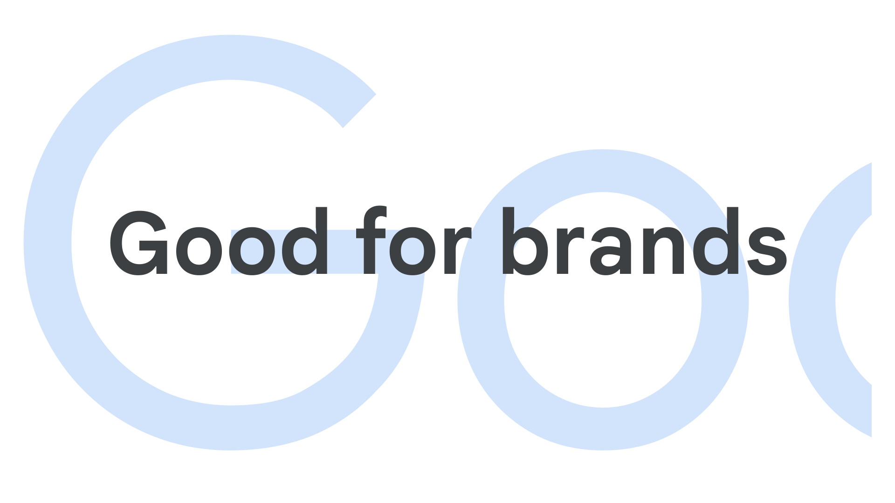

Bespoke, or custom type
By Google Fonts Knowledge contributors · Google Fonts Knowledge.
Original article · Source on GitHub · CC BY-SA 4.0. Text, illustrations and existing credits reproduced from the licensed Knowledge repository. Open Shelf adapted the layout and links; these adaptations are also CC BY-SA 4.0. No endorsement implied.
Bespoke or custom type is specifically commissioned by a client, usually to serve as a brand typeface. It’s normally not available to the public.

Many type foundries sell retail fonts to the public and also offer bespoke/custom type design services. These can be completely unique typefaces, designed from the ground up for the client, or special adaptations of existing designs.
From a licensing perspective, type foundries usually charge for the bespoke design work itself and then a special licensing fee on top. Although commissioning a bespoke typeface can be a costly exercise, the simplified licensing structure for large corporations is a potentially huge money saver.
Foundries may offer a license that allows them to sell the bespoke typefaces to the public as retail fonts after a certain period has passed.